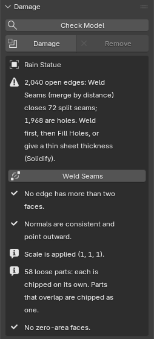
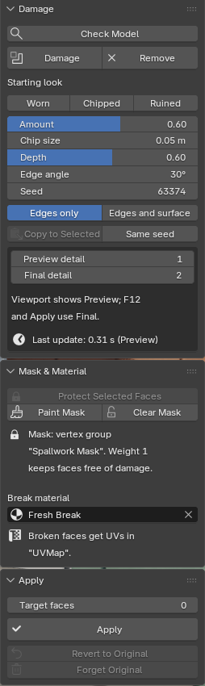

Spallwork quick start
Installing Spallwork and your first damage. The full manual, README.md, is inside the download. Back to the Spallwork product page.
Install (Blender 4.5 LTS or newer; tested on 4.5.15, 5.0.1, 5.1.2 and 5.2.3)
- After checkout, download
spallwork-1.2.0.zipfrom the link in Polar's email. Install the zip itself; do not unzip it first. (To read the manual, open the zip; it isREADME.mdinside.) - In Blender, open Edit > Preferences > Get Extensions. If Blender asks about internet access, Continue Offline is fine: Spallwork needs none. Blender may then show its own yellow "Repository Alert" about extensions.blender.org; it is about Blender's online catalogue, not Spallwork, and you can ignore it.
- Open the drop-down menu (⌄) at the top right, choose Install from Disk... and pick the zip. Spallwork is enabled straight away.
- Press N in the 3D Viewport and open the Spallwork tab.
To update, install the newer zip the same way; your settings, masks and stored originals live in your .blend files and carry over. To remove Spallwork, find it in Get Extensions and choose Uninstall; Apply or Revert your damaged objects first if you need those buttons.
First damage
- Check model (recommended for a new or imported model). Select the meshes and click Check Model. Each finding is one line, with a fix button where Blender can fix it safely:
- Open edges: the mesh is not closed, so Damage will not run on it. Weld Seams merges seams split at UV borders (glTF imports arrive like that); Fill Holes caps the holes that remain. A plane or a single wall face needs thickness first: a Solidify modifier is enough, you do not have to apply it. When the object's modifiers already make it a closed solid, Check model says so and Damage works on that.
- Edges shared by three or more faces (internal faces): delete those faces first.
- Faces pointing inward: Fix Normals.
- Zero-area faces: Remove Zero-Area Faces.
- Scale and loose parts are for information: chip sizes stay in metres whatever the scale, and each loose part is chipped on its own.

Check model on a character converted to one mesh: Weld Seams first, then Fill Holes (Blender 5.2.3, real size). - Select one or many meshes in Object Mode and click Damage. Each gets a geometry-nodes modifier named "Spallwork"; its own mesh is not changed. An object Damage cannot work on is skipped, and the status bar says why.
- Pick a starting look. Each one only sets the sliders:
- Worn: Amount 0.45, Chip size 0.03 m, Depth 0.40, Edge angle 35°, Edges only.
- Chipped (the default): Amount 0.60, Chip size 0.05 m, Depth 0.60, Edge angle 30°, Edges only.
- Ruined: Amount 0.85, Chip size 0.10 m, Depth 0.90, Edge angle 25°, Edges and surface.
- Adjust the sliders. Amount: how many of the possible chips are made. Chip size: the typical chip width, in your scene's units, the same physical size on every object. Before the first Damage the panel already shows the size Damage will use (5 cm in a centimetre scene). The looks are sized for buildings and props; for a 5 cm miniature, type something like 0.004 m. Depth: how deep each chip bites. Edge angle: how sharp an edge must be to chip. Seed: another random placement. Mode: edges only, or edges and surface (shallow pits on flat faces too).
- Copy to Selected gives the other selected objects the active object's settings, each with its own seed unless you tick Same seed. Remove takes the damage off and leaves the object as it was.
Preview detail is what the viewport shows while you work; Final detail is used for F12 renders and for Apply, with no switching by hand. Last update shows what the active object's damage took to compute. If a big model feels slow, lower Preview detail.

Masks and the Break material
- Protect Selected Faces: in Edit Mode, select faces (a doorway, a carving, a logo) and click it. They go into the vertex group "Spallwork Mask", and the damage leaves them alone. The damage is hidden in Edit Mode so you select real faces, and shows again in Object Mode.
- Paint Mask: switches to Weight Paint on "Spallwork Mask". Paint weight 1 where the damage must not go.
- Clear Mask: removes the vertex group, and the damage reaches every face again.
- Break material: the faces the damage creates get the material you pick; every other face keeps its own material and UVs. Broken faces get box-projected UVs, so a tiling texture shows on them.
Apply and Revert
- Target faces (0 = off): for game assets, Apply reduces the result to about this many faces, and keeps every part closed. Each low-poly chip costs about 14 faces on top of the model's own, so start at twice the model's face count; a lower target leaves few chips, and the Apply section warns you with the number to type.
- Apply turns the damage into ordinary mesh data at Final detail, with outward normals. Modifiers above Spallwork are applied with it (the report names them); particle systems and collision stay.
- Revert to Original restores the exact mesh from before Apply, with the modifiers Apply baked, even after you save, close and reopen the file. It gives back the clean mesh; press Damage to chip it again with the same settings.
- Forget Original deletes the stored copy, so the file holds only the applied mesh. Another object that uses the same mesh keeps it.
Every button says what it did in the status bar, for example "Applied 1 object. Stone Arch: applied at Final detail, 38,308 faces. Revert to original brings the old mesh back."
Limits
- Closed meshes only. Curves, text and Grease Pencil must be converted to a mesh first. Loose parts that overlap are chipped as one where they overlap.
- A collection instance at another scale shows chips at that scale. Check model flags it; its Make Instances Real button gives each instance an object of its own, chipped at the set size.
- Fill Holes caps every hole, including one that should stay open, such as a window. Look before you press Damage.
- Chips can knock a small fragment loose where two chips meet at a corner. For a 3D print, compare Check model's loose-part count before and after Apply.
- Don't press Shift+N on a heavily chipped small part after Apply: normals are already outward, and Blender's Recalculate Outside can guess wrong there.
- No cracks, fracture, rebar, debris or grime shaders in version 1. English only. Tested on Linux builds of Blender 4.5.15, 5.0.1, 5.1.2 and 5.2.3; Windows and macOS not yet tested. The full list is on the product page.
Privacy
Spallwork makes no network calls. It reads and writes only the open .blend file, and it collects nothing.
Support
Email support@ochrestack.com with your Blender version, your operating system and, if you can, the .blend file or a screenshot of the Spallwork tab.